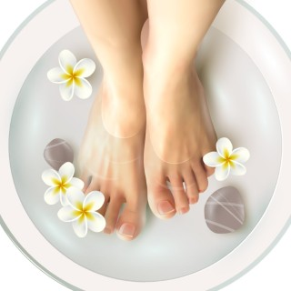
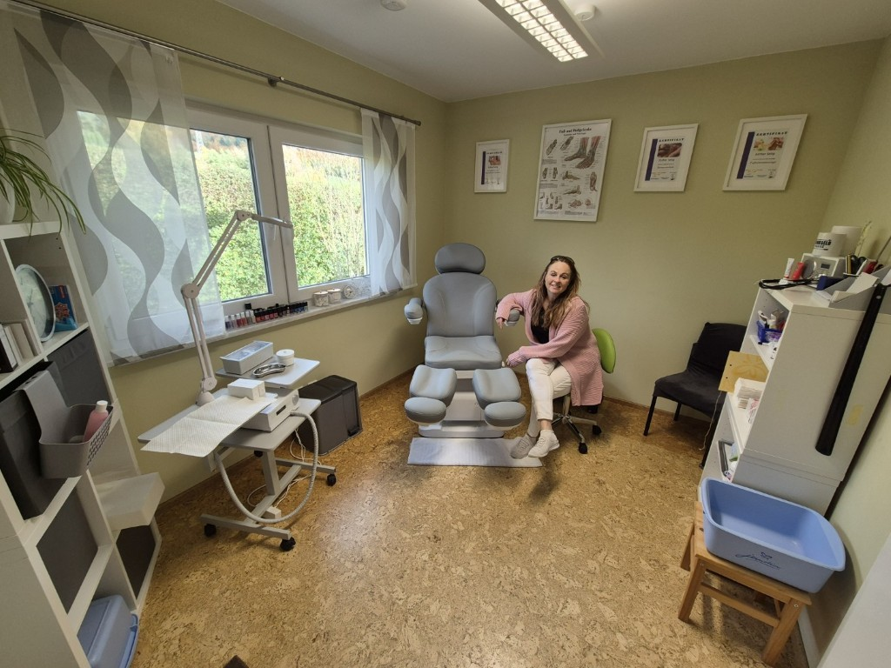
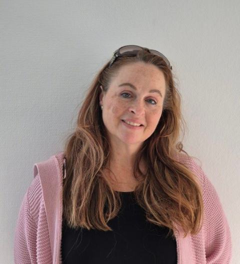

Zusätzliche Option: Fussenthaarung - 5 Euro
Mein Behandlungsspektrum
- entspannendes und pflegendes Fußbad
- komplette und umfassende Nagelpflege
- Überprüfen des Nagelpfalzes
- Entfernen von Nagelhaut
- Abtragen von Hornhaut je nach Stärkegrad
- Bearbeiten von Schrunden
- Behandlung von Hühneraugen
- präventive Beratung
- aktute Beratung bei vorhandenem Fuß- oder Nagelpilz
- kosmetische und pflegende Fußbehandlung
- Fußpeeling & pflegende Fußmaske
- Wohlfühl Fussmassage zur Entspannung
- optional Lackieren der Fußnägel

Deine Auswahl

Entspanntes Fußbad, Haut- und Nagelpflege (kürzen und schleifen),
Hornhautentfernung, Prüfen des Nagelpfalzes,
Fusspflege mit Creme oder Aromaöl
Dauer ca. 35 Minuten

Erweiterte Behandlung bei Problemfuß, Basispflege + eingewachsene Nägel,
Hühneraugen, verdickte Nägel etc.
Dauer bis zu 45 Minuten

Dauer ca. 25 Minuten

4 Euro bei eigenem Nagellack,
6 Euro mit meinem Nagellack
Kontakt
Fusspflege Fusszeit by Esther Selig
Walter-Eberhard-Loch-Str. 10
88682 Salem
Telefon: 0155 60 590081
Whatsapp: 0155 60 590081
Termine nach Vereinbarung per Whatsapp und Telefon
Ich freue mich auf deinen Anruf !
💖-lich willkommen in meiner Praxis

Über mich
Hallo,
ich bin Esther Selig, deine professionelle Fachfußpflegerin in Salem am Bodensee.
Mit
meiner Leidenschaft
für gesunde und gepflegte Füße biete ich dir eine umfassende Fußpflege, die auf deine individuellen
Bedürfnisse
abgestimmt sind.
Was macht eine Fachfußpflegerin ? Eine Fachfußpflegerin ist eine qualifizierte Fachkraft, die sich auf die pflegerische und vorbeugende Behandlung spezialisiert hat. Sie arbeitet nicht medizinisch-therapeutisch (das ist den Podologen vorbehalten), sondern sorgt durch Pflege, Hygiene und Beratung dafür, dass Füße gesund bleiben und Fußprobleme gar nicht erst entstehen.
Ich unterstütze dich bei der Erhaltung deiner Fussgesundheit und deines Wohlbefindens
Ich freue mich auf dich.
Deine Esther

Standort
Angaben gemäß § 5 DDG (Digitale-Dienste-Gesetz) und § 18 MStV (Medienstaatsvertrag):
Esther Selig
Walter-Eberhard-Loch-Str. 10
88682 Salem
Telefon: 0155 60 590081
Inhaberin: Esther Selig
Termine immer nur nach Absprache
Verantwortlich für den Inhalt nach § 18 Abs. 2 MStV:
Esther Selig, Walter-Eberhard-Loch-Straße 10, 88682 Salem-Neufrach
Alle auf dieser Internetseiten verwendeten Bildquellen sind urheberrechtlich geschützt und dürfen nicht ohne
Zustimmung oder Lizenzrecht anderweitig verwendet werden.
Bildquelle extern : freepik
(c) 2025 - Fußzeit Bodensee - Esther Selig